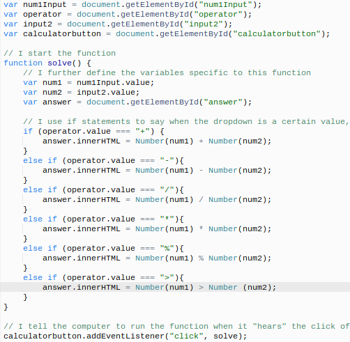

To start off making my calculator, I first created an html page, "calulator.html." I created a drop down bar, with the select tag and added values with the option tag. With this, I continued by adding the symbols for the operations and the button which revealed the answer. Moreoever, by finishing this, I created the layout for my calculator, and all I needed to do was the JavaScript to make it function.
With the html part complete, to be able to make the calculator function, I had to create a JavaScript file. JavaScript is what makes the webpage function and controls it. I started by defining the variables, which included the first value, the operation sign being put in, the second value, and the button, which gives the answer. Next, I started the function and again defined the variables to the function. This reads the values that would go in the function. After completeing this, I created an "if" statement. The "if" statement tell my dropdown to complete a certain operation with the two values, if the dropdown is a certain value. For this specific statment, it is the + operation, that is being used. The "else if" statements tell it to do otherwise, if the above statement is not true. With the statment, to solve the problem, the computer runs the function if it "hears" the calulator button being selected, with the addEventListener function.